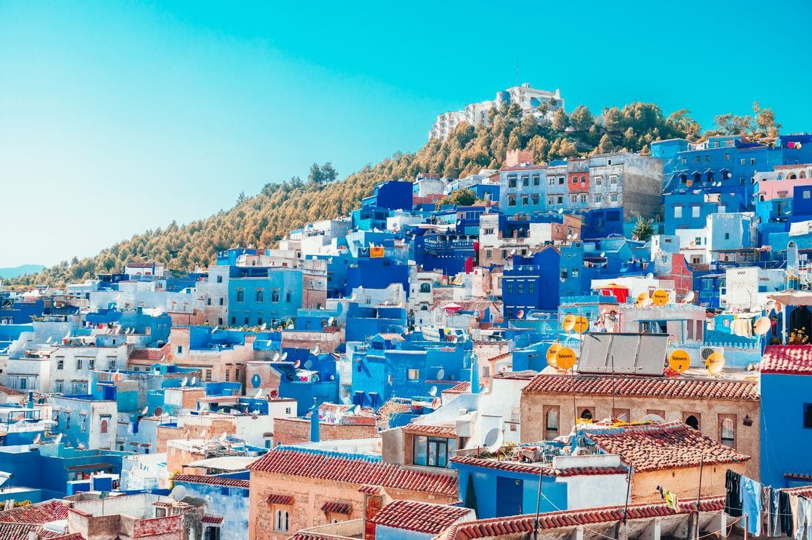
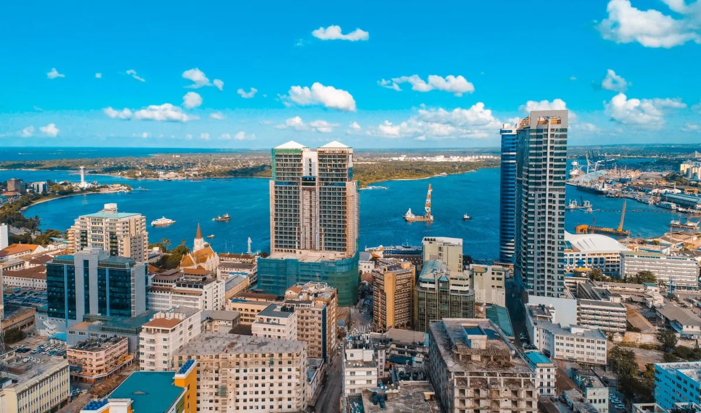

A África é um continente riquíssimo em natureza, cultura, história e diversidade. Muito além dos estereótipos, ela revela experiências profundas, paisagens que parecem pinturas e uma conexão com a essência da vida difícil de explicar. Aqui vão 4 países africanos que são verdadeiros tesouros para quem ama viajar e se encantar com o mundo:
África do Sul
A África do Sul é um dos destinos mais completos do continente. Você pode fazer safári no Parque Kruger, explorar vinícolas em Stellenbosch, conhecer a vibrante Cidade do Cabo (com a belíssima Table Mountain ao fundo) e até visitar a ponta do continente em Cape Point. É aventura, natureza e cultura — tudo junto, com muito estilo e hospitalidade.

Marrocos
Um país que parece saído de um conto das Mil e Uma Noites. Marrocos mistura desertos dourados, cidades cheias de cor e souks (mercados) onde cada esquina tem um aroma novo. Marrakech, Fez, Casablanca e o deserto do Saara são só alguns dos pontos altos. Ideal para quem ama cultura, arquitetura e uma vibe exótica que envolve todos os sentidos.
Tanzânia
A Tanzânia é um destino para quem sonha com uma África selvagem e autêntica. É lá que está o famoso Monte Kilimanjaro, o Parque Nacional do Serengeti (um dos melhores do mundo para ver a vida selvagem) e a Ilha de Zanzibar, com praias paradisíacas e influência árabe. Perfeita para combinar safári e descanso no paraíso.
Egito
Um dos destinos mais emblemáticos do mundo, o Egito é uma viagem no tempo. As Pirâmides de Gizé, o Rio Nilo, os templos de Luxor e os mistérios dos faraós fascinam qualquer viajante. Além disso, o povo egípcio é caloroso, a comida é deliciosa e a história pulsa em cada esquina. Um destino que mistura arqueologia, aventura e espiritualidade.